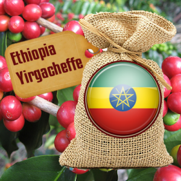

Ethiopia Yirgachaffe Coffee

- Ethiopian Yirgacheffe, picked by hand on a farm in the mountains high above the town of Sidamo.
- There, the coffee beans are washed, and then soaked up to 72 hours in fermentation tanks.
- This wet process method produces intensely flavourful beans.
- This coffee has a floral aroma, smooth-bodied and sweet bright flavour with pronounced lemon notes.
- The profile of this coffee is unique in the world characterized by aromatic floral notes and mild lemon acidity.
- Wet-processed according to traditional methods, this light-bodied coffee has a silky smooth sweetness.